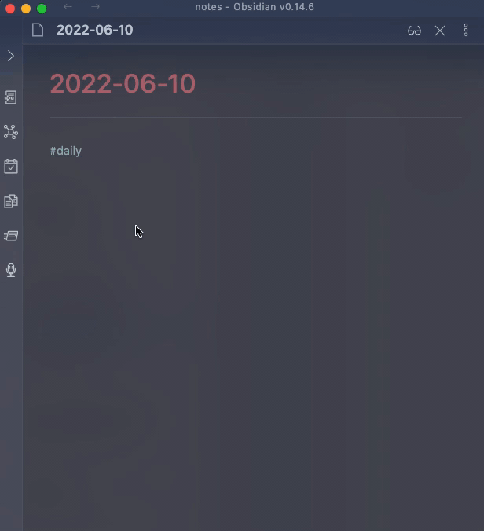

Events Info

Command Input
The input is a date in YYYY-MM-DD format, for example 2022-06-20
When nothing has been input yet, the following criteria will be applied as default (in order):
- if some text is selected AND that text matches the format above, use that as default
- if the filename matches the format, use that as default. this is useful in conjunction with daily notes that have a format of "YYYY-MM-DD"
- if neither of the above two match, use today as a default
Template
Default Template
### {{summary}}
* {{start}}-{{end}}: [Link]({{link}})
* organizer {{organizer}}
* {{attendees}}
* {{location}}
{{attachments}}
{{conference}}
The content above will be inserted for a selected event. To customize, create a new template in a file and reference that file in the plugin settings.
Template Fields
Fields are variables enclosed in {{ }} and will be replaced when the content is generated.
| Field | Description |
|---|---|
| id | The event ID |
| recurringId | The recurring event ID |
| summary | Event title |
| description | Event description |
| status | The event status (e.g. confirmed, tentative, cancelled) |
| eventType | The event type (e.g. default, focusTime) |
| start | The event start time |
| end | The event end time |
| link | This will produce a link to the Google calendar event. Useful to reference attachment in the event or other event info |
| organizer | The email of the event organizer |
| attendees | Email(s) of all attendees, joined by ,. If the attendee had declined the event, a (x) will appear near their email. A tentative response will have a (?) appended |
| attendees.name | Similar to attendees but will replace the email with the name of the attendee. If the name is not available for an attendee, the email is returned instead. |
| location | The event location |
| attachments | A list of attachments for the event, formatted as markdown links. |
| conference | A list of conference entry points for the event, formatted as markdown links. |
| conference.solution | The name of the conference solution (e.g. Google Meet). |
| source | will return the google account from where this event was fetched |
| json | returns the entire event object as JSON. this is useful when used with other templating plugins. see example. |
Customizing Template
You can create your own template in a file, and include a link to that file in Settings for Event Template. For example, you can create a note in _assets/templates/ called t_event and then provide the path _assets/templates/t_event in Settings
Notes
The plugin will only query the primary calendar of the logged in user.